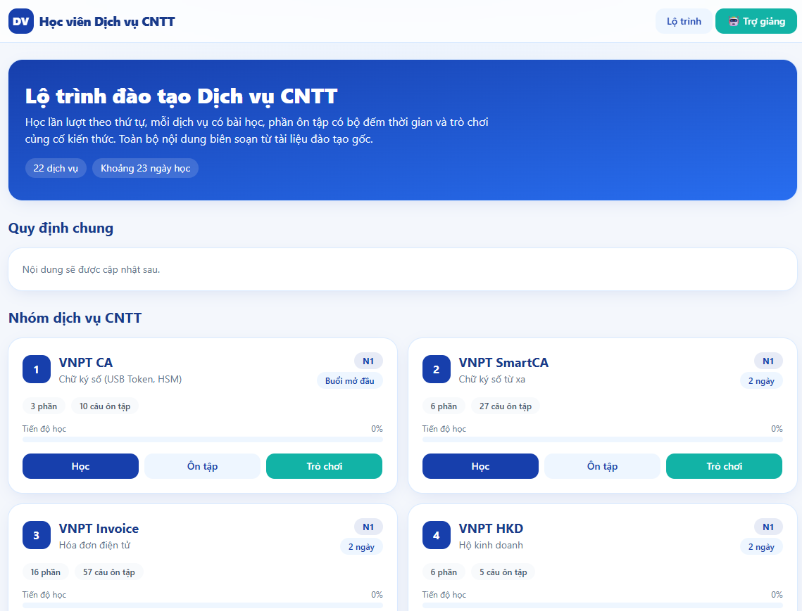
Đăng ký sáng kiến cấp Tổng Công ty năm 2026 · Trung tâm Dịch vụ Khách hàng — VNPT VinaPhone
AI Web App Studio —
Ứng dụng Claude xây dựng hệ sinh thái Web App
Phục vụ đào tạo, tra cứu nghiệp vụ và phân tích chất lượng tại Trung tâm Dịch vụ Khách hàng. Áp dụng từ tháng 06/2026 — nhân sự nghiệp vụ không lập trình vẫn tự thiết kế và xuất bản Web App bằng AI Claude, tạo bước bứt phá trong cách làm việc.
Giá trị tạo ra
- 100% tự chủ công nghệ, tự triển khai các Web App và sản phẩm hoàn thành trong 1–3 giờ, rút ngắn 90–95% thời gian
- 11 sản phẩm số được hoàn thiện và đưa vào vận hành thực tế; tốc độ xử lý nhanh gấp 10–15 lần
- Đạt 100% số hóa tương tác đa nền tảng
- Tiết kiệm 100% ngân sách phần mềm
Lý do đề xuất sáng kiến
Trung tâm Dịch vụ Khách hàng (TTDVKH) quản lý lực lượng điện thoại viên (ĐTV) phục vụ các tổng đài 18001260, 18001166, 18001091 cùng nhiều dịch vụ VT–CNTT và dịch vụ số. Chính sách sản phẩm, quy trình kỹ thuật và kịch bản tư vấn thay đổi thường xuyên theo yêu cầu sản xuất kinh doanh và các đợt tái cơ cấu; công tác quản trị đào tạo phải vừa đúng thông tin, vừa cập nhật nhanh, vừa dễ tra cứu. Trước khi có sáng kiến, công tác này chủ yếu dựa trên tài liệu tĩnh — phù hợp nội dung ổn định nhưng bộc lộ rõ hạn chế khi chính sách thay đổi nhanh hoặc phát sinh yêu cầu khẩn.
Thực trạng trước khi có sáng kiến
Tài liệu tĩnh, cập nhật thủ công
Đào tạo, hướng dẫn nghiệp vụ chủ yếu ở dạng Word/PowerPoint/PDF. Mỗi lần chính sách thay đổi, giảng viên phải rà soát, sửa nội dung, dàn trang và phát hành lại; người học khó xác định đâu là phiên bản mới nhất.
Khó tra cứu trên thiết bị di động
Nội dung dài, trình bày tuyến tính, ít tương tác; ĐTV khó tìm nhanh thông tin cần thiết ngay trong lúc tiếp nhận và tư vấn khách hàng qua điện thoại.
Chưa có công cụ phân tích EMAS
Việc tra cứu, đối chiếu tiêu chí chấm điểm chất lượng cuộc gọi chủ yếu thực hiện thủ công theo văn bản quy định; giảng viên và ĐTV chưa có công cụ tương tác riêng để tự kiểm tra, hỗ trợ coaching.
Yêu cầu khẩn dễ thành nút thắt tiến độ
Với tình huống phát sinh đột xuất (chính sách mới, chiến dịch ngắn hạn), thời gian chuẩn bị tài liệu theo cách làm cũ có thể kéo dài nhiều ngày — trong khi thực tế có yêu cầu chỉ được phép xử lý trong vài giờ (eTaxMobile ~1 giờ, HKD ~2 giờ).
Phụ thuộc nguồn lực CNTT chuyên trách
Nhân sự đào tạo hiểu nghiệp vụ nhưng không phải lập trình viên; các nhu cầu Web App quy mô nhỏ khó được ưu tiên nếu phải chờ qua quy trình phát triển CNTT đầy đủ.
Nguồn tài liệu đào tạo phân tán
Tài liệu tham khảo nằm rải rác ở nhiều nguồn (NotebookLM, cẩm nang, hệ thống CCOS...); khi đào tạo học viên, giảng viên phải tự tổng hợp hướng dẫn từ nhiều nguồn, truy cập nhiều hệ thống khác nhau.
Bứt phá bằng AI: Toàn bộ 6 điểm nghẽn trên được giải quyết nhờ ứng dụng Claude (Anthropic) — chính giảng viên nghiệp vụ, không cần biết lập trình, tự thiết kế, sinh mã và xuất bản Web App bằng AI.
Mục tiêu của sáng kiến
Từ thực trạng trên, sáng kiến đặt ra 5 mục tiêu cụ thể để giải quyết đúng các điểm nghẽn đã xác định:
01
Chuẩn hóa quy trình 4 bước
Để nhân sự đào tạo có thể tự xây dựng Web App nghiệp vụ quy mô nhỏ, giảm phụ thuộc vào nguồn lực lập trình chuyên trách.
02
Chuyển đổi sang Web App tương tác
Đưa nội dung đào tạo, hướng dẫn nghiệp vụ từ tài liệu tĩnh sang Web App tương tác, thân thiện thiết bị di động và dễ cập nhật khi chính sách thay đổi.
03
Số hóa công cụ phân tích EMAS
Tạo công cụ tự tra cứu, đối chiếu tiêu chí EMAS phục vụ giảng viên và ĐTV, hỗ trợ coaching và cải thiện chất lượng cuộc gọi.
04
Phản ứng nhanh với yêu cầu phát sinh
Đáp ứng nhanh các yêu cầu theo chiến dịch hoặc chính sách mới; đặc biệt với các tình huống cần tài liệu trong thời gian ngắn.
05
Nhân rộng mô hình tự chủ công cụ số
Hình thành mô hình "nhân sự nghiệp vụ làm chủ công cụ số" có thể đóng gói, chuyển giao và nhân rộng trong các đơn vị của Tổng Công ty.
Tính mới và điểm sáng tạo
Điểm mới không nằm ở việc dùng riêng lẻ một chatbot AI, mà ở việc biến Claude thành một "lớp công cụ lập trình" trong quy trình do giảng viên nghiệp vụ làm chủ.
01
Từ tài liệu sang sản phẩm số
Nguồn nghiệp vụ được cấu trúc thành menu, bộ lọc, checklist, tình huống, bảng tra cứu — thay vì chỉ số hóa nguyên trạng Word/PDF.
02
"Người dùng AI" → "Kiến trúc sư giải pháp"
Giảng viên thiết kế Prompt Architecture có cấu trúc, kiểm thử kết quả và quản lý phiên bản, không chỉ hỏi đáp với AI.
03
Từ sản phẩm đơn lẻ sang hệ sinh thái
Ứng dụng nhóm hóa theo 4 nhu cầu nghiệp vụ, dùng chung cách triển khai, tái sử dụng mẫu giao diện/logic/prompt.
04
Human-in-the-loop
AI tạo mã, nhưng quyết định nghiệp vụ, kiểm tra tính đúng và phê duyệt nội dung vẫn do con người thực hiện.
Quy trình AI Web App Studio — 4 bước khép kín
Giảng viên đóng vai "kiến trúc sư giải pháp"; Claude đóng vai "lập trình viên AI". Rút ngắn khoảng cách từ "có yêu cầu nghiệp vụ" đến "có công cụ số có thể dùng", vẫn giữ vai trò kiểm soát của chuyên gia nghiệp vụ.
1
Phân tích yêu cầu & khóa nguồn thông tin
Xác định mục tiêu, đối tượng, nguồn tài liệu được phép dùng — đúng phiên bản, rõ nguồn, không đưa dữ liệu cá nhân/khách hàng lên Web App công khai.
2
Thiết kế Prompt Architecture
Cấu trúc prompt có chủ đích gồm 6 khối để Claude hiểu đúng vai trò và biên dịch nghiệp vụ thành giao diện.
3
Sinh mã, kiểm thử & tinh chỉnh
Claude sinh HTML/CSS/JS; giảng viên kiểm thử trên bản xem trước, so sánh với tài liệu nguồn, thử nút/menu/bộ lọc, kiểm tra responsive.
4
Xuất bản, chia sẻ & cập nhật phiên bản
Triển khai trên Vercel để có URL truy cập; khi chính sách đổi, giảng viên cập nhật mã và xuất bản lại trên cùng hệ thống.
6 khối Prompt Architecture
| Khối | Nội dung mô tả | Mục đích |
|---|---|---|
| 1. Vai trò AI | Chuyên gia frontend/UI-UX, lập trình Web App tĩnh | Định hình cách AI tổ chức giải pháp |
| 2. Bối cảnh nghiệp vụ | Tổng đài/dịch vụ/đối tượng học viên | Giữ đúng ngữ cảnh sử dụng |
| 3. Dữ liệu đầu vào | Tài liệu chính sách, quy trình, kịch bản | Bảo đảm nội dung bám nguồn |
| 4. Quy tắc logic | Tìm kiếm, lọc, checklist, tính toán, câu hỏi | Chuyển nghiệp vụ thành chức năng |
| 5. UI/UX | Mobile-first, dễ đọc, menu rõ, màu sắc phù hợp | Tăng khả năng tra cứu và tự học |
| 6. Kiểm thử đầu ra | Danh mục nội dung, logic, link, responsive | Giảm lỗi trước khi xuất bản |
Hệ sinh thái sản phẩm đã triển khai
Từ tháng 06/2026, sáng kiến đã hình thành 11 sản phẩm số — 10 Web App độc lập (trong đó 01 sản phẩm có thêm phiên bản video tích hợp) và 01 Web App báo cáo — chia thành 4 nhóm chức năng bám sát thực tế vận hành.
Đào tạo & bồi dưỡng — 05 Web App
Ứng cứu nghiệp vụ — 02 Web App + 01 video
Phân tích EMAS — 02 Web App
Truyền thông – Công đoàn — 01 Web App
A. Đào tạo và bồi dưỡng ĐTV 05 Web App
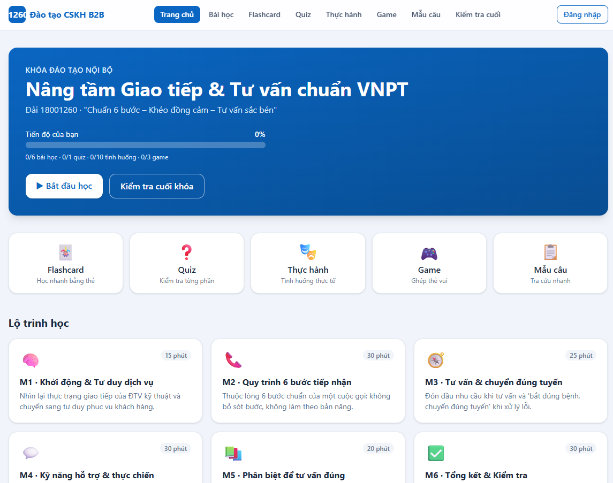
Đào tạo nâng cao kỹ năng ĐTV 18001260
Áp dụng từ 06/2026 cho đào tạo nâng cao kỹ năng nội bộ Đài CNTT.
Truy cập Web App →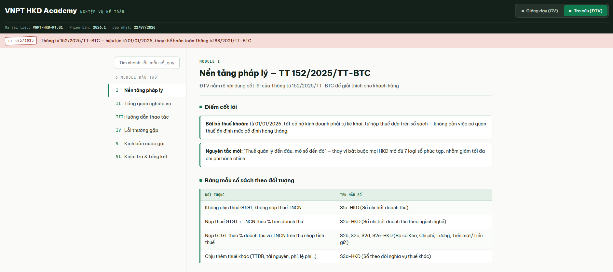
Đào tạo bổ sung dịch vụ VNPT HKD
Áp dụng từ 07/2026 cho khóa bổ sung nghiệp vụ kế toán VNPT HKD.
Truy cập Web App →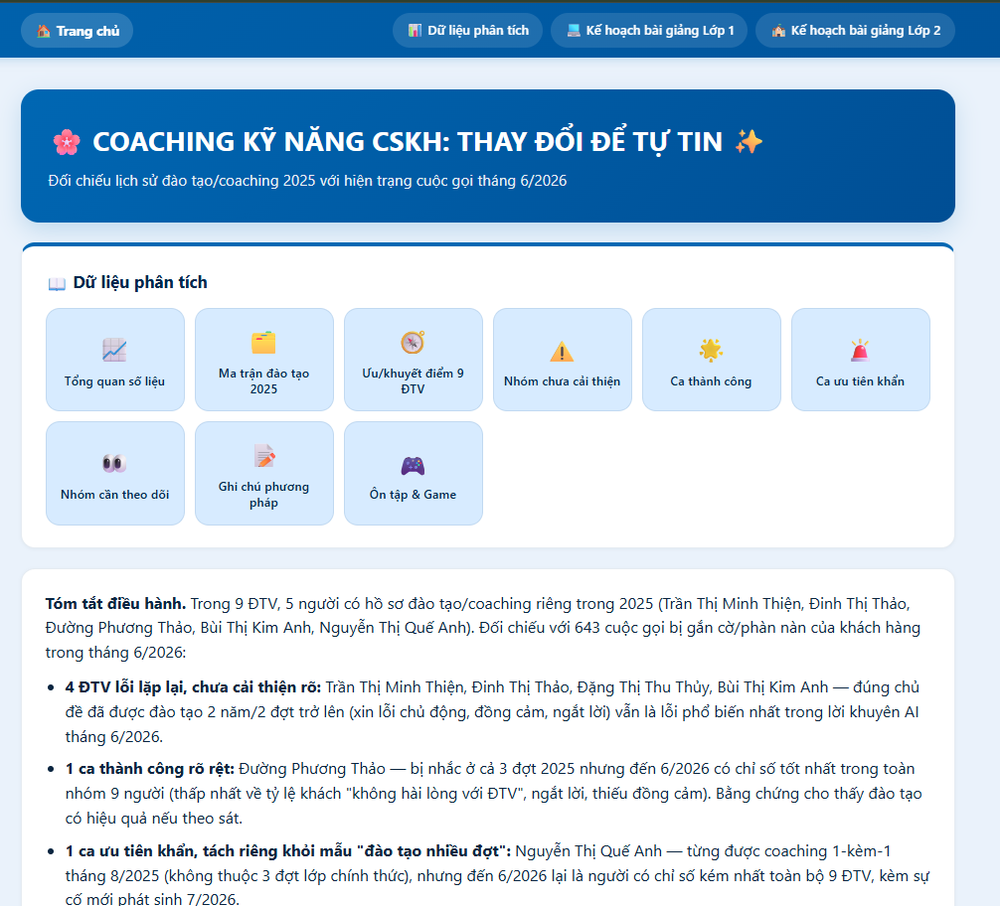
Kỹ năng cho nhóm ĐTV cần cải thiện chỉ số chất lượng
Áp dụng 07/2026 cho 09 ĐTV đã qua 03 đợt đào tạo năm 2025.
Truy cập Web App →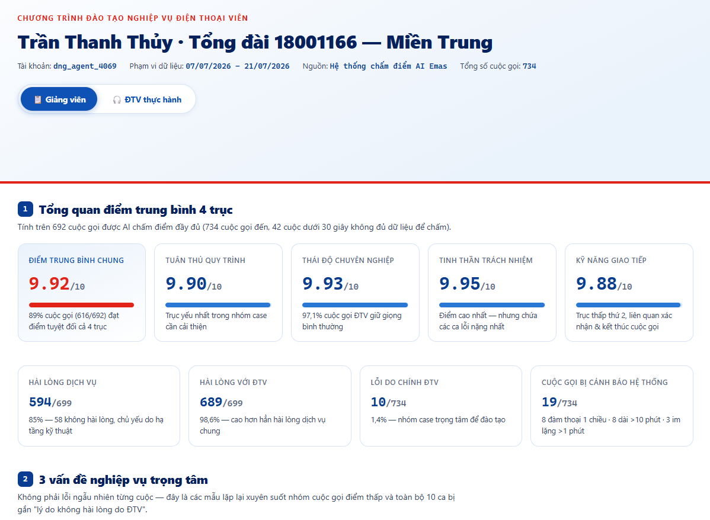
Bổ sung nghiệp vụ/kỹ năng 18001166 nhánh 1 cho ĐTV chuyển đổi
Áp dụng cho khóa 08/2026 theo yêu cầu chuyển đổi công việc.
Truy cập Web App →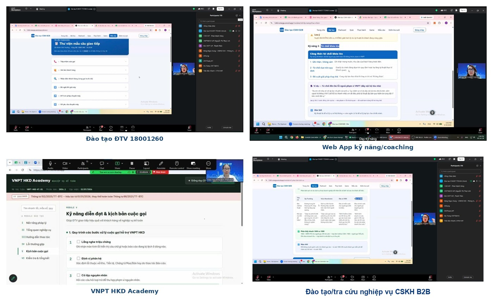
B. Ứng cứu nghiệp vụ và yêu cầu khẩn 02 Web App + 01 video
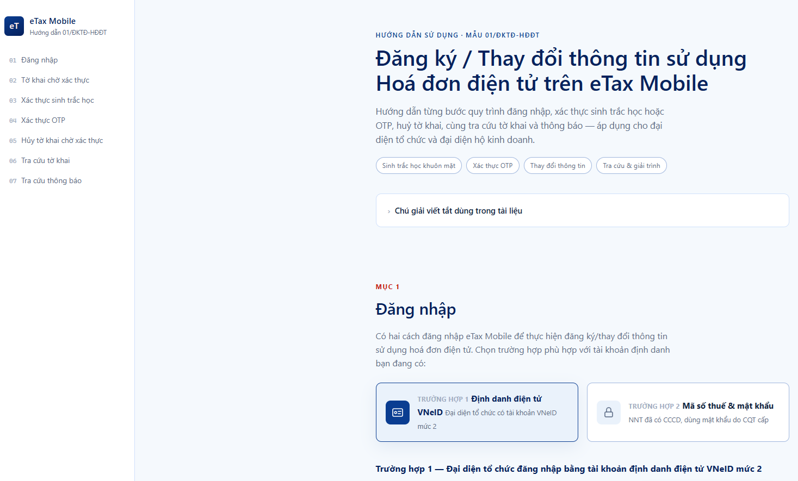
Hướng dẫn thủ tục sinh trắc học eTaxMobile
Xây dựng trong ~01 giờ theo yêu cầu khẩn của Đài CNTT.
Truy cập Web App →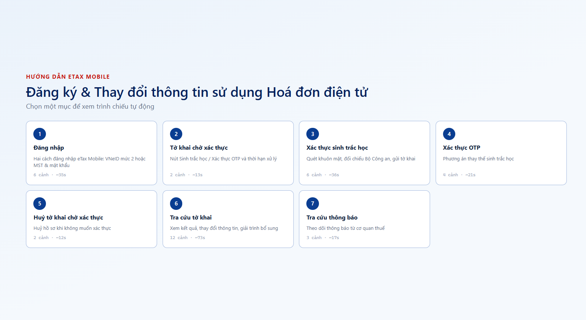
eTaxMobile — phiên bản video trên smartphone
Tích hợp trên cùng hệ thống, dành cho thao tác trên di động.
Truy cập Web App →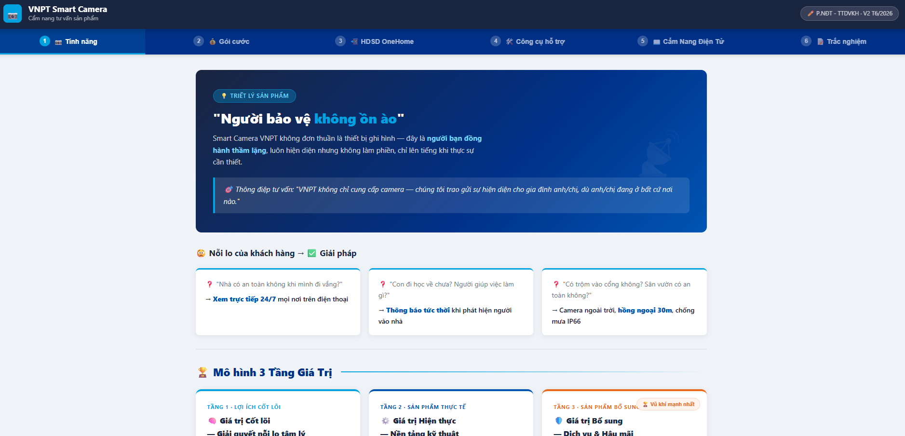
Chiến dịch phát triển thuê bao Camera
~03 giờ xây dựng; dùng cho 04 lớp tập huấn 02–03/06/2026, dẫn link trong văn bản 461/DVKH-TH, phạm vi 497 CBCNV.
Truy cập Web App →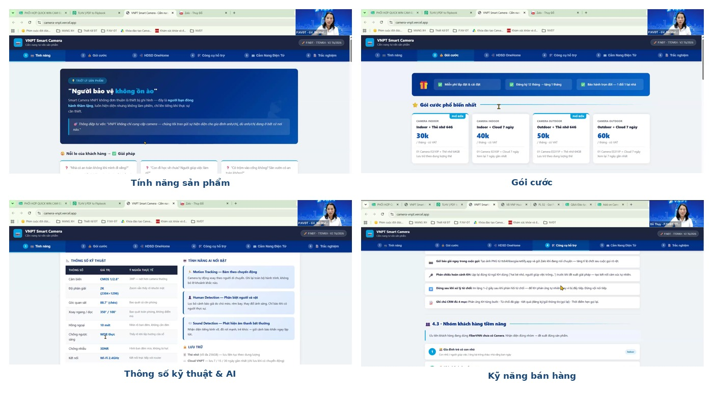
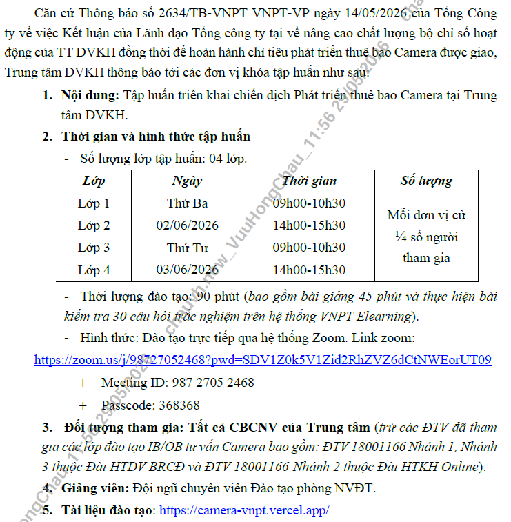
C. Phân tích chỉ số chất lượng EMAS 02 Web App
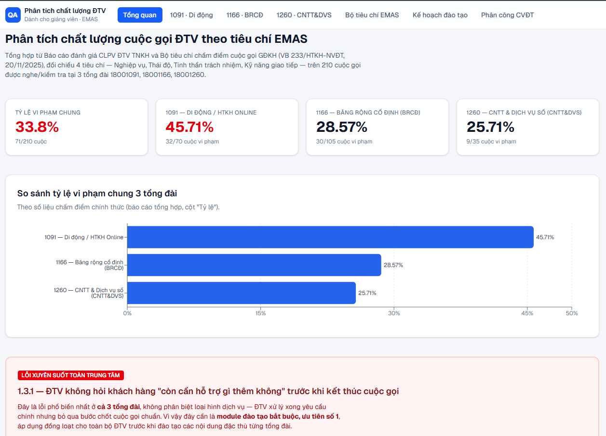
Phân tích tiêu chí chấm điểm EMAS — dành cho Giảng viên
Áp dụng từ 07/2026, hỗ trợ tra cứu, đối chiếu tiêu chí khi phân tích chất lượng cuộc gọi.
Truy cập Web App →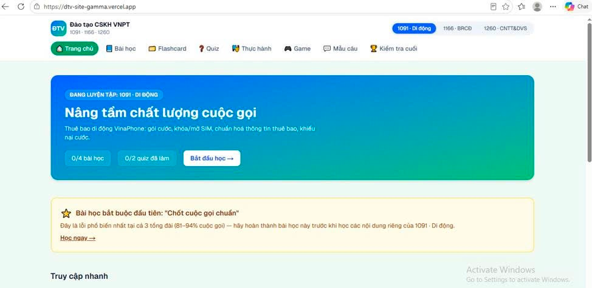
Phân tích tiêu chí chấm điểm EMAS — dành cho học viên/ĐTV
Áp dụng từ 07/2026, giúp ĐTV tự kiểm tra tiêu chí, nhận biết lỗi thường gặp.
Truy cập Web App →D. Truyền thông và thi đua Công đoàn 01 Web App
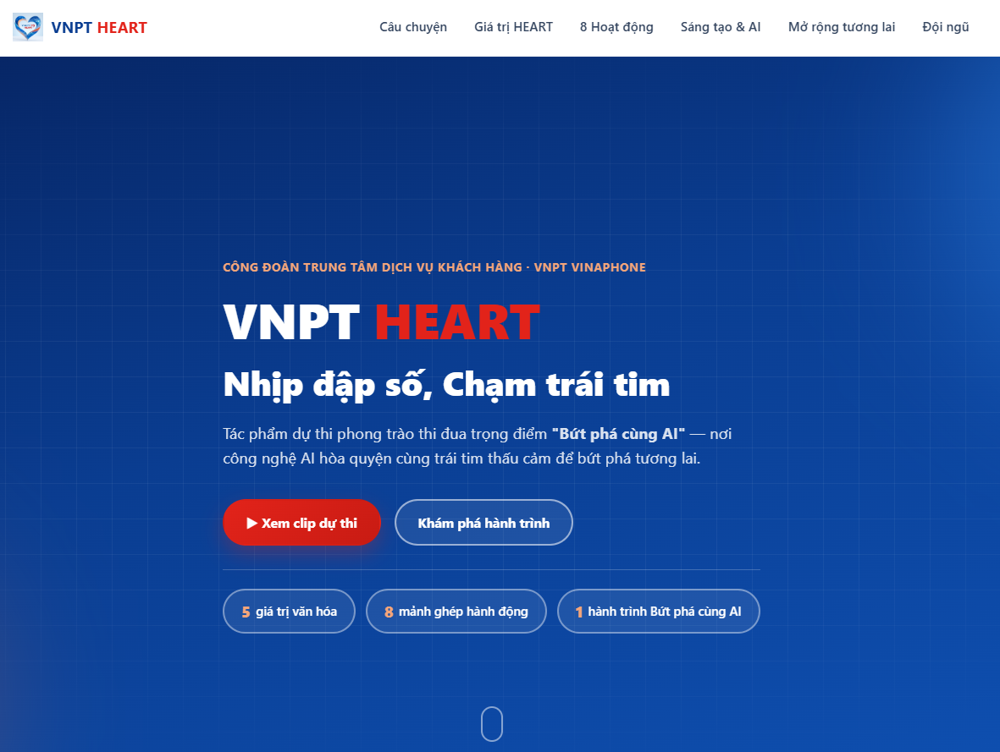
Báo cáo dự thi "Bứt phá cùng AI" — chủ đề VNPT HEART
Trình bày nội dung dạng tương tác, trực quan cho phong trào thi đua theo văn bản 3410/PTTĐ VNPT VNP CM-CĐ và văn bản điều chỉnh 98/CĐVNPT VNP.
Truy cập Web App →E. Báo cáo sáng kiến 01 Web App
AI Web App Studio
Web App báo cáo sáng kiến
Phiên bản báo cáo sáng kiến trước đó, cùng thuộc danh mục Web App đã triển khai của Trung tâm.
Truy cập Web App →Kiểm soát chất lượng và rủi ro khi sử dụng AI
Kiểm soát nguồn nghiệp vụ
Chỉ dùng nội dung từ tài liệu/chính sách đã ban hành hoặc xác nhận; ghi nhận thời điểm cập nhật.
Con người phê duyệt đầu ra
Claude chỉ hỗ trợ tạo mã và bố cục; giảng viên chịu trách nhiệm kiểm tra nội dung, logic, trải nghiệm.
Bảo vệ dữ liệu
Không đưa dữ liệu cá nhân, khách hàng hoặc thông tin mật lên Web App công khai.
Kiểm thử chức năng
Nút, menu, bộ lọc, công thức, hiển thị di động được thử bằng tình huống mẫu trước khi áp dụng.
Quản lý phiên bản
Cập nhật tập trung trên Web App; lưu nguồn tham chiếu và ngày cập nhật cho nội dung quan trọng.
Kết quả áp dụng
| Tiêu chí | Trước khi áp dụng | Sau khi áp dụng | Giá trị cải thiện |
|---|---|---|---|
| Tốc độ xây dựng | Biên soạn/dàn trang tài liệu tĩnh; yêu cầu khẩn khó đáp ứng ngay. | Chuyển yêu cầu nghiệp vụ thành Web App trong thời gian ngắn; eTax ~1 giờ, HKD ~2 giờ. | Tăng khả năng phản ứng theo thời điểm; tốc độ xử lý nhanh gấp 10–15 lần. |
| Định dạng tài liệu | Tài liệu tĩnh (Word, PDF, PowerPoint), phát hành lại nhiều phiên bản, khó xem trên di động. | 11 Web App tương tác HTML5/JS, truy cập bằng link trực tiếp, tối ưu trên smartphone & PC. | Đạt 100% số hóa tương tác đa nền tảng. |
| Cập nhật nội dung | Sửa Word/PPT/PDF, phát hành lại nhiều phiên bản. | Cập nhật tập trung trên Web App, chia sẻ qua một đường link. | Giảm thao tác, giảm nguy cơ dùng nhầm phiên bản. |
| Trải nghiệm học/tra cứu | Nội dung dài, ít tương tác; khó tìm nhanh trên điện thoại. | Menu, checklist, bộ lọc, mô-đun nội dung; thuận tiện trên PC và smartphone. | Tăng tính tự học và tự tra cứu. |
| Phân tích EMAS | Tra cứu thủ công theo văn bản quy định. | 02 Web App riêng cho giảng viên và ĐTV. | Hỗ trợ coaching theo tiêu chí cụ thể; rút ngắn 60% thời gian chuẩn bị hồ sơ coaching. |
| Nguồn lực phát triển | Nhu cầu web nhỏ có thể phải chờ hỗ trợ kỹ thuật/lập trình. | Giảng viên tự thiết kế, kiểm thử, triển khai với AI hỗ trợ. | Giảm phụ thuộc, tăng tự chủ nội bộ. |
| Chi phí triển khai | Tốn chi phí thuê ngoài hoặc nguồn lực lập trình chuyên trách. | Tận dụng AI và hạ tầng Vercel miễn phí sẵn có. | Chi phí 0 đồng cho phát triển từng ứng dụng; tiết kiệm 100% ngân sách phần mềm. |
Đánh giá lợi ích thu được
Hiệu quả năng suất & nguồn lực
- Rút ngắn 90–95% thời gian chuẩn bị sản phẩm số — tính bằng giờ thay vì một chu kỳ biên soạn kéo dài (eTaxMobile ~1 giờ, Web App Camera ~3 giờ).
- Giảm phụ thuộc lập trình viên cho ứng dụng nghiệp vụ quy mô nhỏ.
- Tối ưu chi phí: 0 đồng chi phí phát triển & hạ tầng, không phát sinh nhu cầu thuê đơn vị ngoài.
Hiệu quả đào tạo & vận hành
- Chuẩn hóa một điểm truy cập duy nhất qua đường link Web App.
- Hỗ trợ học trên thiết bị di động, nội dung chia mô-đun, dễ tìm.
- 02 Web App EMAS tăng hiệu quả coaching, hỗ trợ cả người dạy và người học.
- Tăng tốc phản ứng nghiệp vụ với chiến dịch ngắn hạn, thay đổi chính sách.
- Truyền thông, thi đua phong trào Công đoàn vốn đã hiệu quả qua văn bản, hình ảnh — nay có thêm kênh Web App giúp thông tin vừa online, vừa tăng trải nghiệm tương tác cho CBCNV.
Đổi mới phương thức làm việc
- Nhân sự đào tạo chuyển từ "người biên soạn tài liệu" sang "người thiết kế trải nghiệm học và kiến trúc giải pháp số".
- Đội ngũ nhìn nhận AI như công cụ sản xuất, không chỉ công cụ hỏi đáp.
- Quy trình có thể đóng gói thành cẩm nang, bộ prompt mẫu, nhân rộng cho đơn vị khác trong Tổng Công ty.
Hiệu quả của giải pháp Web App tĩnh
- Giải quyết hiệu quả công tác biên soạn tài liệu giảng dạy đòi hỏi phân tích, tổng hợp từ nhiều nguồn dữ liệu.
- Đáp ứng xuyên suốt quá trình giảng dạy mà không phụ thuộc vào máy chủ xử lý thời gian thực (real-time server) như các nền tảng notebook.
- Có khả năng xuất riêng từng module học tập cho học viên mà không yêu cầu đăng nhập.
- Giao diện trực quan, không cần cài đặt; đáp ứng xuyên suốt nhu cầu tra cứu tài liệu học tập mọi lúc, mọi nơi.
Tự đánh giá tiêu chí xét công nhận sáng kiến
✓
Tính mới & sáng tạo đột phá
Giải pháp có nội dung mới tại Tổng Công ty; giảng viên nghiệp vụ tự thiết kế Web App bằng Claude theo quy trình 4 bước.
✓
Phạm vi đã triển khai
Đã áp dụng tại 01 đơn vị trực thuộc Tổng Công ty — Trung tâm Dịch vụ Khách hàng.
✓
Tính hiệu quả
Rút ngắn 90–95% thời gian xây dựng/cập nhật tài liệu; hỗ trợ 497 CBCNV chương trình Camera; tạo 02 công cụ EMAS.
✓
Khả năng duy trì ≥ 1 năm
Quy trình có thể tái sử dụng; Web App tiếp tục cập nhật theo chính sách và mở rộng cho nghiệp vụ mới.